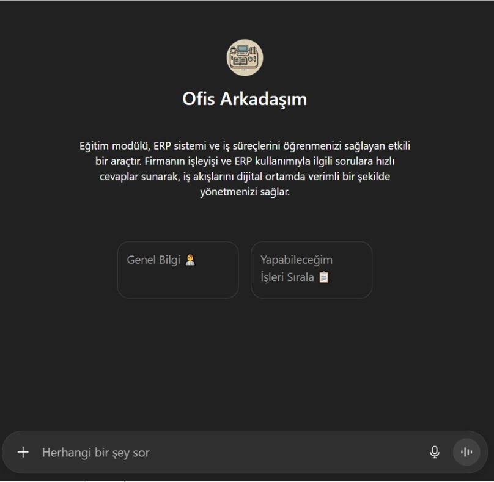

ERP ve süreç bilgisi birkaç kişinin hafızasındaydı; takılan çalışan bekliyordu.
Tüm işlerin adım adım anlatıldığı bilgi tabanı hazırlanıp yapay zekâ destekli asistana yüklendi.
Çalışan sorusuna anında yanıt alıyor; bilgi kişide değil kurumda kalıyor.
Mevcut durum
ERP kullanımı ve süreç bilgisi kişilerin hafızasındaydı.
Kişiye bağlı bilgi
Bir işin sistemde nasıl yapılacağını yalnızca o işi yıllardır yapan kişi biliyordu.
Sor ve bekle
Takılan çalışan, bilen kişiyi bulana kadar işini bekletiyor ya da yanlış kayıt giriyordu.
Uzun uyum süreci
Yeni çalışanlar sistemi ancak birinin yanında, iş üzerinde öğrenebiliyordu.
Analiz ve bulgular
Rollere göre bilgi ihtiyacı ve en sık yaşanan hatalar çıkarıldı.
Rol bazlı ihtiyaç
Her rolün günlük işinde hangi ERP ekranlarını ve adımlarını kullandığı belirlendi.
Süreç ve ekran eşlemesi
Her iş adımı, sistemdeki karşılığı olan ekran ve alanla eşleştirildi.
Tekrarlayan hatalar
Sık yapılan yanlış girişler ve çözüm yolları derlendi.
Uygulanan çözüm
Tüm işlerin adım adım anlatıldığı bilgi tabanı hazırlandı ve yapay zekâ destekli bir asistana yüklendi.
Adım adım kılavuzlar
Sipariş girişi, iade, sevkiyat gibi işlerin hangi ekrana girilip nereye basılarak yapılacağı yazıldı.
Hata çözümleri
Sık karşılaşılan hataların nedeni ve çözüm adımları eklendi.
Soru sor, yanıt al
Çalışan sorusunu doğal dille yazıyor; asistan ilgili süreci ve adımları anlatıyor.

Örnek kullanım: çalışan sorar, asistan adım adım anlatır
Sonuçlar
Süreç bilgisi kişilerden alınıp kuruma kazandırıldı.
Önce
- Bilgi birkaç deneyimli kişinin hafızasında
- Takılan çalışan bilen kişiyi bekliyor
- Yeni çalışan uzun süre birinin yanında öğreniyor
Sonra
- Tüm işler adım adım, tek yerde kayıtlı
- Soru doğal dille soruluyor, yanıt anında geliyor
- Yeni çalışan temel işlemlerde daha erken kendi başına ilerliyor
İşletmeye katma değer
Beklemesiz destek
Çalışan sorusunu yazıyor; ekran, alan ve adım anında geliyor.
Kurumsal hafıza
Çalışan ayrılsa da süreç bilgisi firmada kalıyor.
Hafifleyen eğitim yükü
Deneyimli çalışanlar tekrar eden sorulardan kurtuldu.
Daha az kayıt hatası
Doğru adım her seferinde aynı şekilde anlatılıyor.